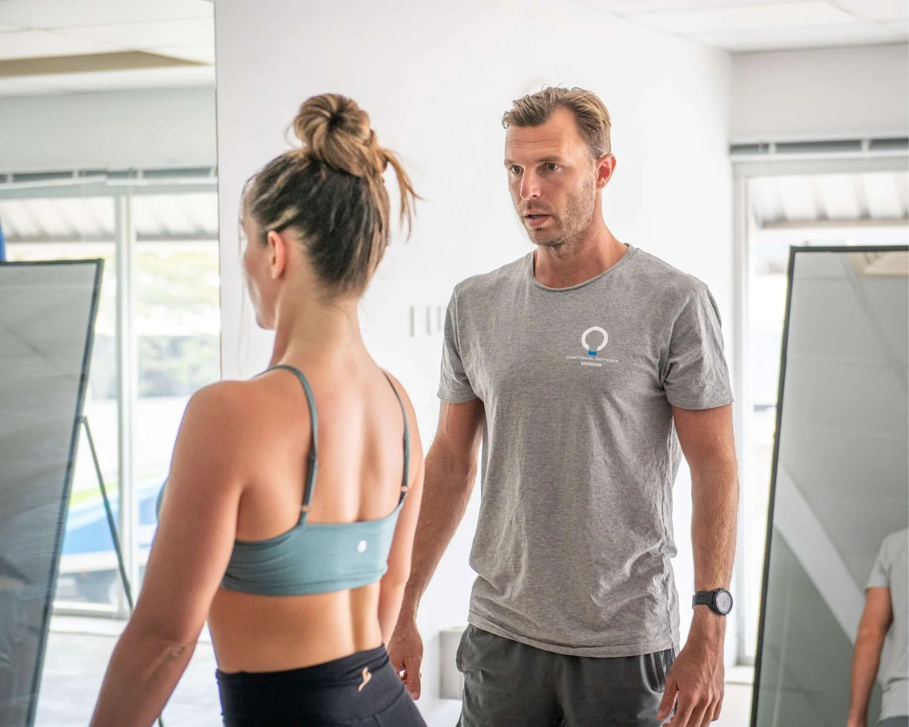

Not Sure If We Can Help?
Let's Find Out Together
Book a free 15-minute call to discuss your situation, or start with a full 90-minute posture and gait assessment to understand exactly what's driving your pain.

Conditions We Specialise In
We address the root cause — not just the symptom site. If you've been told to "just stretch," "strengthen your core," or "learn to live with it," there's a better way.
Most pain and posture issues aren't caused where you feel them. A sore lower back often stems from a dysfunctional hip. A stiff neck may be driven by a compressed rib cage. We use gait and posture analysis to find the actual source — then retrain your movement so the problem doesn't come back.
Chronic back pain is rarely just a "back problem" — it's a movement problem. We use slow-motion gait and posture analysis to identify the dysfunctions driving your pain, then retrain your system through corrective exercises, myofascial release and rib-pelvis alignment.
Our protocol includes targeted correctives, dynamic progressions, myofascial release, rib-pelvis alignment, hip stability training and breathing mechanics correction. We start with a 90-minute assessment followed by 1-2 weekly sessions with homework between.
Common presentations: lower back pain, upper back tension, neck stiffness, disc issues, chronic tension headaches.
Sciatica and nerve pain are driven by compression and movement dysfunction — not simply a "pinched nerve." We identify where your body is creating pressure on neural structures, then correct the movement patterns causing it.
By restoring proper hip stability, pelvic alignment and gait mechanics, we reduce the compression that drives sciatic and nerve symptoms. Many clients experience significant relief within the first few weeks of training.
Common presentations: shooting leg pain, numbness, tingling, radiating pain from the lower back or neck.
Our scoliosis protocol addresses spinal curvature through myofascial release, nervous system calming and gait retraining — creating lasting spinal correction without surgery. We work with adults, post-surgery patients and children.
Treatment includes releasing fascial restrictions that hold the spine in dysfunctional patterns, down-regulating the nervous system to allow structural change, and rebuilding gait and posture for lasting correction. We also address inflammation through dietary protocols and lifestyle interventions.
We help adults with scoliosis, post-surgery patients seeking improved function, and children and teens where early intervention can create meaningful change.
We don't just tell you to "stand up straight." We identify the underlying movement dysfunctions that pull your body out of alignment — then correct them at the root. Proper posture reduces pain, improves breathing, energy and mood.
Your body is like a Jenga tower — you can't fix the top without addressing the base. We analyse the entire structure, address dysfunctional breathing patterns, and rebuild movement from the ground up. Clients regularly achieve visible postural improvement within months.
Benefits: reduced pain, improved breathing, increased energy, improved digestion and improved mood.
Joint pain comes from things rubbing and leaning that shouldn't be. When your body moves dysfunctionally, joints are forced into positions they weren't designed for — creating wear, inflammation and pain.
We address sports injuries, degenerative hip conditions, groin pain, shoulder dysfunction, SIJ dysfunction and pelvic floor issues. Clients have avoided hip replacement surgery, returned to sport and resolved chronic pain that hadn't responded to conventional treatment.
Common presentations: hip impingement, knee tracking issues, frozen shoulder, rotator cuff problems, groin pain.
The pelvis and rib cage are the two primary "frames" of your body. When either is rotated, tilted or compressed, everything above and below compensates — driving pain, stiffness and dysfunction throughout the chain.
We restore the relationship between the rib cage and pelvis through targeted corrective training, breathing mechanics and gait retraining. Correcting this foundation often resolves pain in areas far from the pelvis or ribs themselves.
Common presentations: pelvic tilt, rib flare, breathing dysfunction, SIJ pain, pelvic floor issues.
Winged scapulas occur when the shoulder blades protrude from the back rather than sitting flat. This is not just cosmetic — it indicates deeper dysfunction in how the muscles of the upper back, shoulders and rib cage integrate together.
Isolated "scapula exercises" rarely fix the problem because the dysfunction originates elsewhere. Rib cage position and mobility play a critical role — when the rib cage is compressed or rotated, the scapula cannot sit properly against it. We address the entire kinetic chain.
Clients have resolved winged scapulas completely, eliminated associated nerve pain and improved sport performance through our approach.
Posture isn't a position — it's the result of how your body moves. Conventional exercises like rows and chin tucks treat hunchback as a muscular weakness problem, but the issue is deeper than muscle strength.
Hunchback posture develops from years of compensatory patterns embedded in how you walk, breathe and stabilise your body. Our 3-component approach: myofascial release to free fascial restrictions, gait retraining to create thoracic extension and rotation, and corrective training that integrates the entire kinetic chain.
Involves excessive thoracic curvature, forward head posture and rib cage compression that restricts breathing and organ function.
Diastasis recti is not simply a muscle separation problem. It is a pressure and movement sequencing problem — the abdominal wall separates because of how pressure is being managed through the trunk, not because the muscles are "weak."
Our 6-part approach: rib cage positioning, pelvic orientation correction, diaphragm-TVA coordination, oblique sling integration, gait sequencing and real-world movement progression. We work with both pregnancy and postpartum pathways.
We address abdominal wall function during pregnancy to reduce severity, and provide structured postpartum rehabilitation to restore function after birth.
Postural and movement dysfunctions are far easier to correct before they become deeply ingrained. Young nervous systems adapt faster to new movement patterns — giving children and teens the best chance at lasting correction.
We work with children with conditions such as cerebral palsy, Scheuermann's disease and scoliosis. Young athletes also benefit from biomechanics-based training that develops better coordination, speed and injury resilience.
Advantages of starting young: cleaner slate, greater neuroplasticity, lower body mass makes correction easier, and less inhibition to trying new movement patterns.
Fascia is the connective tissue running throughout your entire body. When it becomes restricted, dehydrated or adhered, it can create chronic pain, drive inflammation and contribute to chronic fatigue by forcing muscles to work harder.
Restricted fascia can refer pain to areas far from the actual restriction site. We prioritise movements that align with how humans are biologically designed to move — walking, running, throwing — which load fascia the way it was designed to be loaded, rather than isolated barbell exercises that can reinforce existing dysfunctions.
Common presentations: chronic pain unresponsive to treatment, persistent inflammation, chronic fatigue, widespread body tension.
Whether you're a weekend warrior or competitive athlete, biomechanical dysfunction limits your performance and increases injury risk. We optimise your movement patterns so you can train harder, recover faster and perform at a higher level.
By correcting the underlying movement dysfunctions that limit speed, power and endurance, we help athletes unlock performance they didn't know they had. Our approach integrates gait mechanics, rotational power and full kinetic chain coordination.
See our results page for athlete transformations across cricket, basketball, gymnastics and more.
Not Sure If We Can Help?
Book a free 15-minute call to discuss your situation, or start with a full 90-minute posture and gait assessment to understand exactly what's driving your pain.